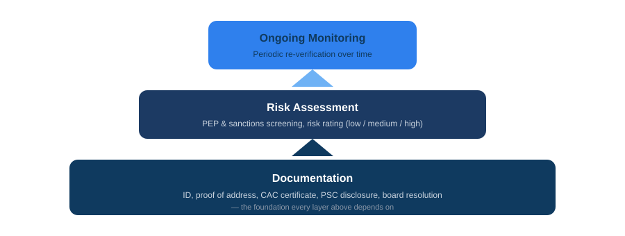

Most businesses that need to run KYC on their clients start with a document checklist copied from somewhere else, then find the gaps months later, usually when a bank, auditor, or regulator asks for something that was never collected in the first place. Here's what a genuinely complete KYC intake covers, broken down by client type, plus the parts that are easy to miss until they aren't.
Individual clients
- Full legal name, date of birth, and nationality
- Valid government-issued ID: NIN, international passport, driver's licence, or voter's card. For higher-risk transactions, it's worth collecting two forms rather than settling for one.
- BVN, where the relationship touches banking or financial services
- A recent passport photograph
- Proof of address, meaning an actual document (a utility bill, bank statement, or tenancy agreement, dated within the last three months), not just a typed-in address field. This is the piece most basic intake forms leave out entirely, and it's one of the first things an auditor checks for.
- Phone number and email
- Occupation, and for higher-value engagements, source of funds
Corporate clients

- CAC Certificate of Incorporation and current Status Report
- RC number and TIN (your CAC number now doubles as your TIN automatically, following this year's tax framework changes)
- Memorandum & Articles of Association
- Directors' and shareholders' particulars, each backed by their own individual KYC (ID, address proof, the full set)
- Persons with Significant Control (PSC) disclosure: name, percentage of ownership or control, nationality, and ID for anyone crossing the beneficial-ownership threshold, commonly set at 25%
- Registered business address, with supporting proof
- A board resolution authorising whoever is instructing you on the company's behalf
- Nature of business and the expected scope of the engagement
Incorporated Trustees and NGOs
- Certificate of Incorporation for Trustees
- The governing constitution or rules
- Each trustee's individual KYC, collected the same way as any individual client
The risk layer that sits on top of documents
Collecting documents is only half of KYC. The other half is what you actually do with them once they're in hand.
Regulators aren't just checking whether you collected the paperwork. They're checking whether you assessed what it meant, and whether that assessment shaped how you handled the relationship.
- PEP screening. Is the client, or anyone with significant control, a Politically Exposed Person? That covers anyone currently or formerly holding a prominent public role, or closely connected to someone who does.
- Sanctions screening. Checking names against the relevant watch lists before, not after, the relationship begins.
- A risk rating. Low, medium, or high, based on client type, transaction size, and geography. This is the part regulators genuinely look for during an audit, and it's the piece a document checklist alone will never give you.
- Ongoing review. For relationships that continue over time, KYC isn't a one-time capture. Periodic re-verification matters, particularly if something about the client's risk profile shifts.
Two structural things worth building in from day one
Record retention. Nigerian AML rules generally expect KYC records to be kept for a period after the relationship ends, five years being the figure most often cited. If your onboarding process quietly deletes files once a case gets marked complete, that's a gap worth closing before an audit finds it for you.
Data protection compliance on the collection itself. You're gathering NIN, BVN, and government ID copies: exactly the category of data the Nigeria Data Protection Act treats seriously. A lawful basis for collecting it, a clearly stated purpose, secure storage, and a real consent step (not a line buried in terms and conditions nobody reads) all need to be part of the process, not an afterthought bolted on later.
If your business is a DNFBP, the bar is higher
If your firm is a Designated Non-Financial Business or Profession, and law firms, accountants, real estate practices, and dealers in high-value goods often are, you're not just running "onboarding." You're operating under SCUML and AML obligations with a stricter customer due diligence standard. That means source-of-funds questions and PEP declarations aren't optional extras. They're part of what SCUML expects you to be assessing on your own clients as a routine matter, not a special case.
Frequently asked questions
Do I need to run full KYC on every single client, regardless of size?
The depth should scale with risk. A small, low-value, low-risk client doesn't need the same scrutiny as a large corporate transaction involving multiple shareholders. What matters is that your process actually reflects that difference, rather than treating every client identically or, worse, skipping the assessment step entirely.
What's the difference between KYC and KYB?
KYC (Know Your Customer) typically refers to verifying individuals. KYB (Know Your Business) extends that to verifying the company itself: its registration, ownership structure, and beneficial owners. In practice, onboarding a corporate client usually means doing both at once.
Can KYC documents be collected and stored digitally?
Yes, and it's the norm now. The requirement isn't paper versus digital, it's that whatever system you use actually retains records for the required period and keeps the underlying data secure.
Where this usually breaks down in practice
The gap almost never shows up at the individual-document level. Most businesses remember to ask for an ID. It shows up in the structural pieces: proof of address as an actual document rather than a form field, PSC disclosure for corporate clients, a defined risk rating rather than a gut feeling, and a retention policy that doesn't quietly delete records the moment a file gets marked "done." Those are the parts worth checking your current process against, ideally before an auditor does it for you.
Awal Global Consults runs KYC onboarding built around exactly this: structured intake for individuals, companies, and trustees, the documentation layer, and the risk assessment layer regulators actually check for.
Need help with this?
Awal Global Consults runs KYC onboarding for businesses that need it done properly the first time. Structured intake, document collection, and the compliance layer regulators actually check for.